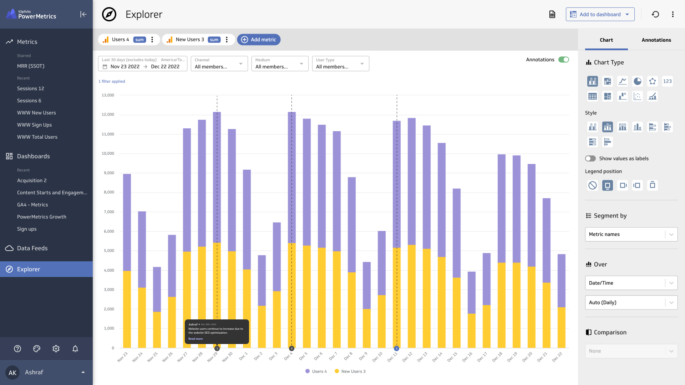
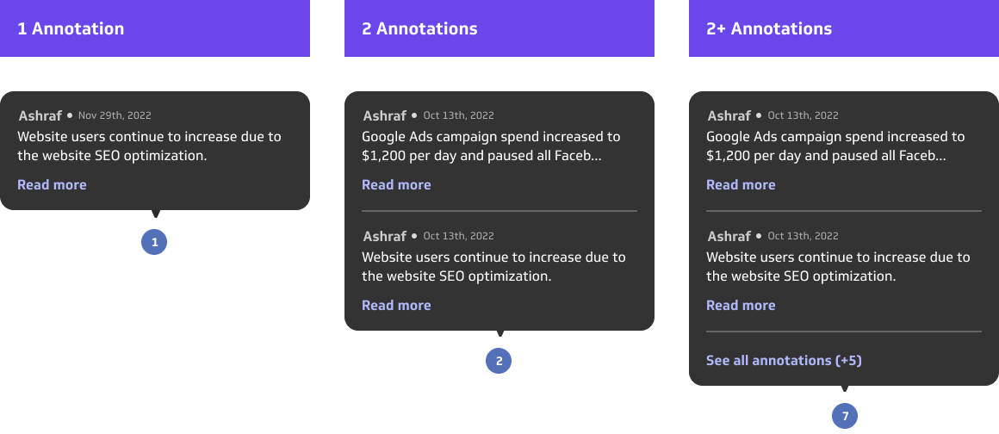

Annotations
Role
Project Lead
UI/UX Design
Team members
Nick Venne Developer
Holly Ebbs UX Content Writer
Introduction
Users are looking for a way to share and compile a list of key decisions and changes that could have an impact on their business. Annotations are introduced as a way to connect the charts with those important moments.
Opportunity
Annotations has the ability to introduce PowerMetrics not as a tool for monitoring your metrics but also registering the business's key moments and tying them in with the company's data
Simple solution for signficant decisions
In the explorer, enabling annotations will show simple indicators on the date axis (usually on the x-axis). Users can click on that indicator to show the annotation attached to that date.
Annotations on the charts are a summary, however, users can read more in the annotations sidebar.
Annotations on a bar chart vizualization
Annotations on a line/area chart vizualization

Annotations sidebar for more details on your annotations.

Easily create new annotations.

Intuitive date picker to choose where your annotations falls.

Example of how the annototation speech bubble looks like with different ammount of content.
Anatomy of the annototation speech bubble.
Final prototype
Success Metrics
After looking at the data, and evaluating the current user experience, we came to the following conclusions:
An increasee in annotations created
An increase in number of users per account due to sharing annotations